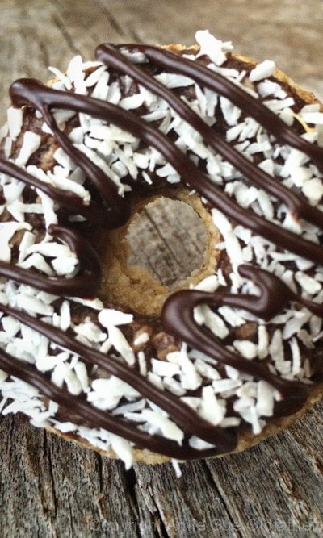
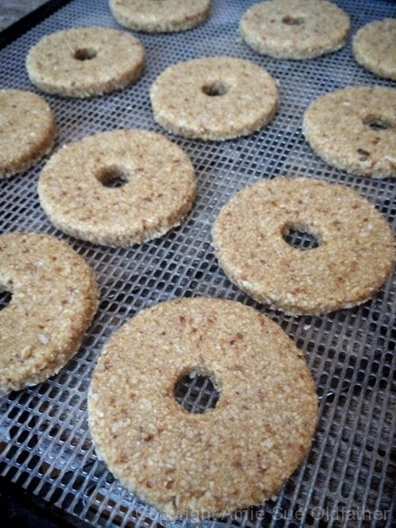
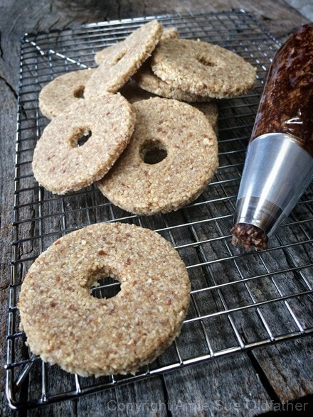
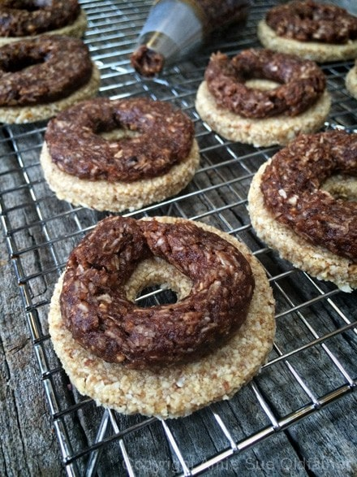
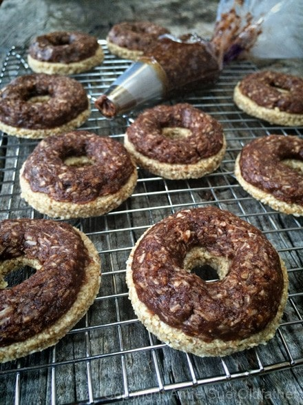
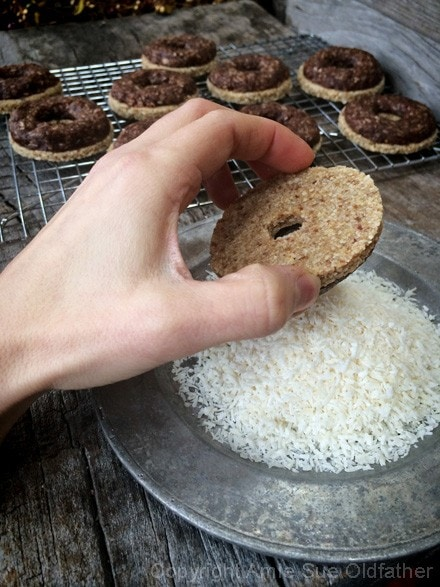
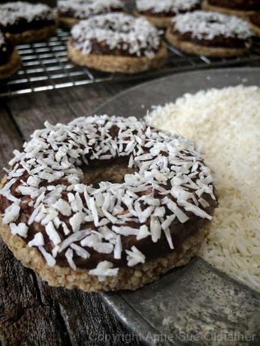
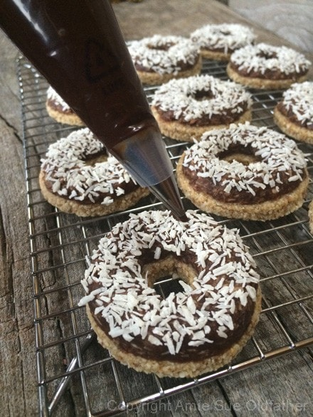
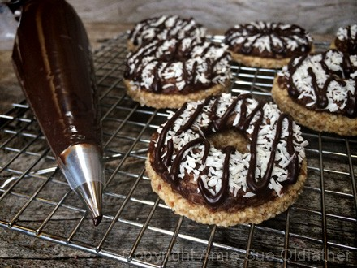

Caramel deLights
 ~ raw, vegan, gluten-free ~
~ raw, vegan, gluten-free ~
When I was in third grade, I had the chance to join the Brownies. The group snuggled right in between the Daisy’s and Girl Scouts. To this day, I still have my sash that is all decked out with badges. My time in that group was short but sweet and left me with some fun memories.
The Girl Scout Promise
On my honor, I will try:
To serve God and my country,
To help people at all times,
And to live by the Girl Scout Law.
The Girl Scout Law
I will do my best to be
honest and fair,
friendly and helpful,
considerate and caring,
courageous and strong, and
responsible for what I say and do,
and to
respect myself and others,
respect authority,
use resources wisely,
make the world a better place, and
be a sister to every Girl Scout.
I never sold Girl Scout cookies, nor have I even eaten very many of them, but this recipe was created and inspired by my friend Lyn. I can’t even say that this recipe tastes just like the Girl Scout cookies known as Somoas. But I can tell you that it tastes heavenly. Firm and chewy cookies, layered with a rich coconut and caramel, then dunked in shredded coconut, and to top it off… laced with a dark chocolate drizzle. Ah, merely a bit of heaven.
I did a little homework on what ingredients the Girl Scouts use in making their Somoa cookies (AKA Caramel deLights), and I have to say that it was a sad discovery. I wish part of their service to the world could include making healthier cookies for consumers and supporters.
This is what I found: INGREDIENTS ~ Sugar, vegetable oil (partially hydrogenated palm kernel and/or cottonseed oil, soybean and palm oil), enriched flour (wheat flour, niacin, reduced iron, thiamin mononitrate [vitamin B1], riboflavin [vitamin b2], folic acid), corn syrup, coconut, sweetened condensed milk (condensed milk, sugar), contains two percent or less of sorbitol, cocoa, glycerin, invert sugar, cocoa processed with alkali, cornstarch, salt, caramelized sugar, dextrose, soy lecithin, carrageenan, leavening (baking soda, monocalcium phosphate), natural and artificial flavors.
As you scroll down through the ingredients and preparation steps for this recipe, it might seem daunting. Trust me; it isn’t. I just did my best to be as detailed as possible while walking you through the steps. So, give it a quick read, and you will find that in the end, they are quite easy to make. :) Enjoy.

Ingredients:
Yields 12 cookies
Cookie base:
- 1 cup almond meal/flour
- 1 cup shredded coconut, ground to powder
- 1/8 tsp sea salt
- 1/2 cup date paste
- 1 Tbsp maple syrup
- ½ tsp almond extract
- 1 Tbsp water
Caramel & coconut layer:
- 1 cup date paste
- 2 Tbsp raw almond butter
- 1 Tbsp maple syrup
- 1 tsp vanilla extract
- 1/4 tsp sea salt
- 3/4 cup shredded coconut
- 1 Tbsp raw cacao powder
Chocolate drizzle:
- 1/4 cup cold-pressed coconut oil, melted
- 1/4 cup raw cacao powder
- 1/4 cup maple syrup
Topping:
Preparation:
Cookie base:
- In a large mixing bowl, combine the almond flour, ground coconut, and salt. Mix.
- Add the date paste, maple syrup, and almond extract. With your hands, mix everything until a dough forms. If the dough is too dry, add 1 Tbsp water.
- Roll out the dough by placing the dough ball in the center of a teflex sheet that comes with the dehydrator or on parchment/wax paper. Place another sheet on top and with a rolling pin, roll the dough out to about 1/4″ thick. Remove the top sheet.
- Cut out the circles with cookie cutters. I used 2 cookie cutters. The large one was 2 1/2″ diameter and a small one for the center that was 1/2″ in diameter. Use what you have on hand. Depending on the size you use, it will change the yield amount.
- After cutting out the circles, roll the remaining dough back out and cut out more circles, do this process over and over until all the dough is used up. I ended up with a small ball of batter that I rolled into a ball and flattened, which was the taste tester. :)
- Place the cut-out cookies on the mesh sheet that comes with the dehydrator and dry at 115 degrees (F) for 16 hours or until desired dryness is reached.
Caramel & coconut layer:
- In the same mixing bowl, mix the date paste, almond butter, maple syrup, vanilla, and sea salt.
- Add in the coconut and cacao powder. Mix well, so everything is well integrated.
- Place in a piping bag fitted with a 1/2″ tip. Leave on the counter while the cookies dehydrate as this will keep in soft and pliable when you are ready to use it. You can skip the piping process and use a butter knife, but I found piping it made it fast, easy, and clean.
Chocolate drizzle:
- Place the coconut oil, cacao, and maple syrup in the blender and blend until it turns smooth and creamy.
- Place a piping bag, fitted with a small circular tip (put a piece of tape over the hole), in a tall glass, folding a cuff over the edge.
- Pour the chocolate sauce into the bag and place it in the fridge for 15 minutes to firm up a bit.
- Tip: To melt the coconut oil, place the jar in a large bowl of hot water.
- Tip: You can hand mix this, but I find that it doesn’t get as creamy, and you risk having grainy cacao bits in it.
- Tip: If you don’t have a piping bag, you can use a zip-lock bag. When the time comes to piping the chocolate, snip a small corner off of the bottom.
- This recipe will create more chocolate sauce than what is needed, but it will store in the fridge for several weeks so you can use it over all sorts of yummy raw treats!
Assembly:
- Place about 1/4 cup of shredded coconut on a small plate.
- Pipe a rope of caramel & coconut batter on top of the cookie. With a damp finger pat down the edges, smoothing it out.
- Turn the cookie upside down and press lightly into the shredded coconut.
- Pipe strips of chocolate over the top of the cookie and enjoy it!
- Store in the fridge or on the countertop. These would freeze well, but be sure to store them in a single layer, so you don’t mess up the top.








© AmieSue.com